Целью данной работы является получение навыков по работе с журналами системных событий.
На сервере создадим файл конфигурации сетевого хранения журналов в каталоге /etc/rsyslog.d (рис. @fig-1):
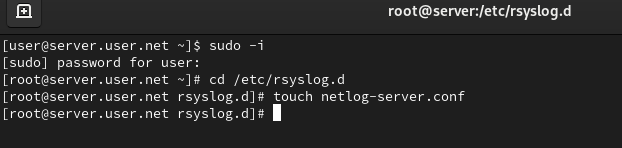
В файле конфигурации /etc/rsyslog.d/netlog-server.conf включим приём записей журнала по TCP-порту 514 (рис. @fig-2):
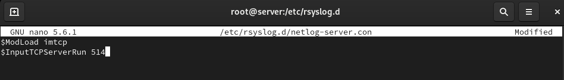
Перезапустим службу rsyslog и посмотрим, какие порты, связанные с rsyslog, прослушиваются (рис. @fig-3):
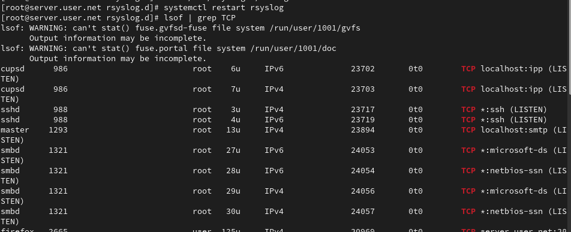
На сервере настроим межсетевой экран для приёма сообщений по TCP-порту 514 (рис. @fig-4):
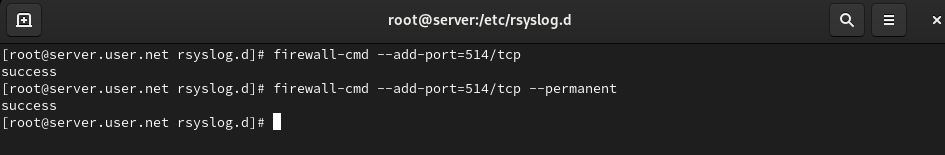
На клиенте создадим файл конфигурации сетевого хранения журналов (рис. @fig-5):
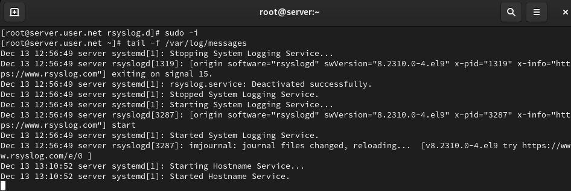
В файле конфигурации /etc/rsyslog.d/netlog-client.conf включим перенаправление сообщений журнала на 514 TCP-порт сервера (рис. @fig-6):
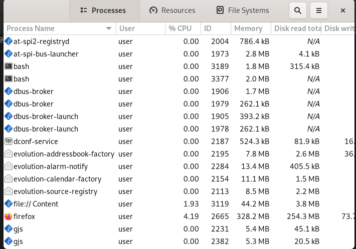
Перезапустим службу rsyslog на клиенте для применения изменений (рис. @fig-7):
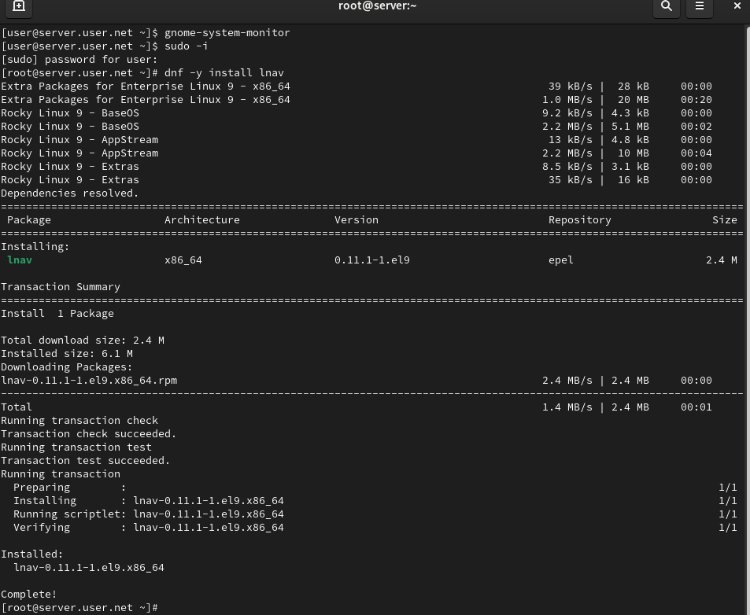
На сервере просмотрим один из файлов журнала для проверки сбора сообщений (рис. @fig-8):
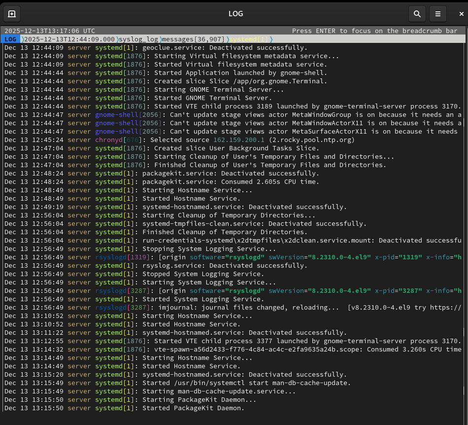
На сервере под пользователем запустим графическую программу для просмотра журналов gnome-system-monitor (рис. @fig-9):
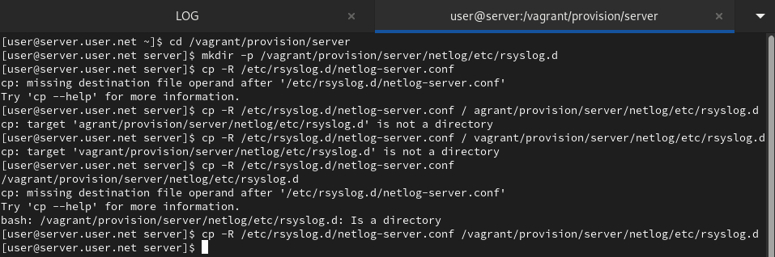
На сервере установим просмотрщик журналов системных сообщений lnav (рис. @fig-10):
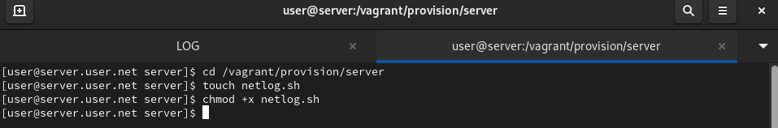
Просмотрим логи с помощью lnav для удобного анализа системных сообщений (рис. @fig-11):
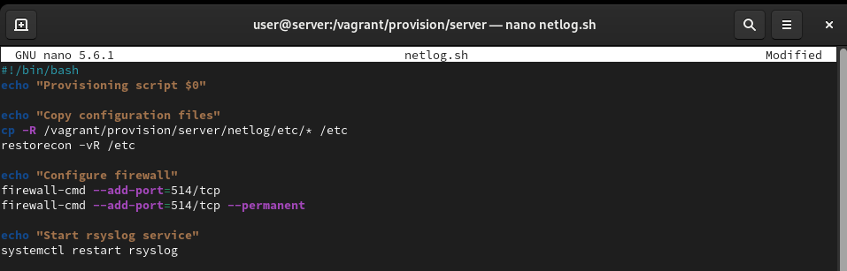
На виртуальной машине server перейдём в каталог для внесения изменений в настройки внутреннего окружения, создадим каталог netlog и исполняемый файл netlog.sh (рис. @fig-12):
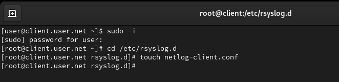
Откроем файл netlog.sh на редактирование и пропишем скрипт из лабораторной работы (рис. @fig-13):
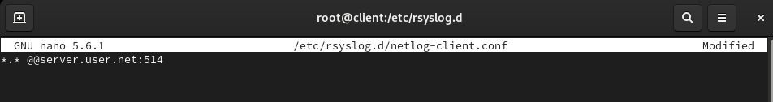
На виртуальной машине client перейдём в каталог для внесения изменений в настройки внутреннего окружения, создадим каталог netlog и исполняемый файл netlog.sh (рис. @fig-14):
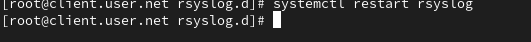
Откроем файл netlog.sh на редактирование и пропишем скрипт из лабораторной работы (рис. @fig-15):
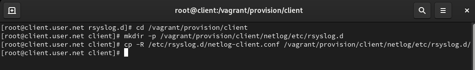
Для отработки созданного скрипта во время загрузки виртуальной машины server в конфигурационном файле Vagrantfile добавим запись в разделе конфигурации для сервера (рис. @fig-16):
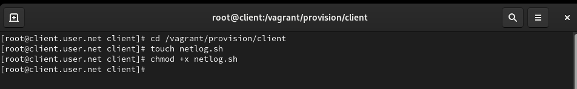
Для отработки созданного скрипта во время загрузки виртуальной машины client в конфигурационном файле Vagrantfile добавим запись в разделе конфигурации для клиента (рис. @fig-17):
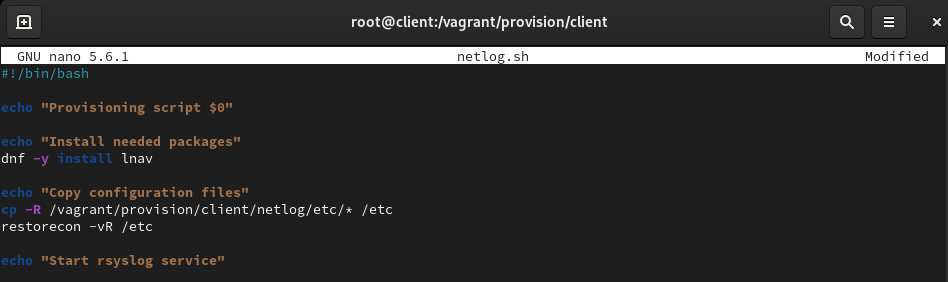
Проверим, что журналы с клиента успешно собираются на сервере (рис. @fig-18):
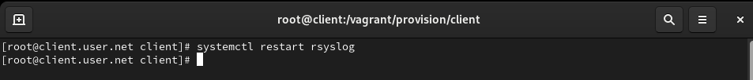
Запустим мониторинг системных событий для наблюдения за работой службы (рис. @fig-19):
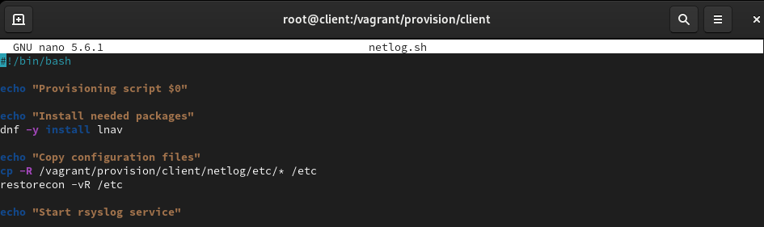
В ходе выполнения лабораторной работы были получены навыки по работе с журналами системных событий.
Какой модуль rsyslog вы должны использовать для приёма
сообщений от journald?
Для приёма сообщений от journald в rsyslog используется модуль
imjournal.
Как называется устаревший модуль, который можно
использовать для включения приёма сообщений журнала в
rsyslog?
Устаревший модуль для приема сообщений журнала в rsyslog - imuxsock (или
imuxsock_legacy).
Чтобы убедиться, что устаревший метод приёма сообщений из
journald в rsyslog не используется, какой дополнительный параметр
следует использовать?
Для предотвращения использования устаревшего метода можно использовать
параметр SystemMaxUseForward=no в файле
/etc/systemd/journald.conf.
В каком конфигурационном файле содержатся настройки,
которые позволяют вам настраивать работу журнала?
Настройки, позволяющие настроить работу журнала, содержатся в файле
/etc/systemd/journald.conf.
Каким параметром управляется пересылка сообщений из
journald в rsyslog?
Для управления пересылкой сообщений из journald в rsyslog используется
параметр ForwardToSyslog=yes в файле
/etc/systemd/journald.conf.
Какой модуль rsyslog вы можете использовать для включения
сообщений из файла журнала, не созданного rsyslog?
Для включения сообщений из файла журнала, не созданного rsyslog,
используется модуль imfile.
Какой модуль rsyslog вам нужно использовать для пересылки
сообщений в базу данных MariaDB?
Для пересылки сообщений в базу данных MariaDB используется модуль
ommysql или ommysqlps.
Какие две строки вам нужно включить в rsyslog.conf, чтобы
позволить текущему журнальному серверу получать сообщения через
TCP?
Добавьте следующие строки в rsyslog.conf: